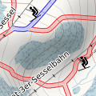

OpenStreetMap - Deutschland
Was ist OpenStreetMap?
OpenStreetMap.org ist ein im Jahre 2004 gegründetes internationales Projekt mit dem Ziel, eine freie Weltkarte zu erschaffen. Dafür sammeln wir weltweit Daten über Straßen, Eisenbahnen, Flüsse, Wälder, Häuser und vieles mehr.
Mehr erfahren...Wie kann ich die Daten nutzen?
OpenStreetMap selbst bietet die gesammelten Daten entweder in Rohform oder in Form vorberechneter Kartenbilder an. Für bestimmte Programme und Geräte gibt es außerdem spezielle Downloads.
Mehr erfahren...Wie kann ich mitmachen?
Es gibt viele verschiedene Möglichkeiten zu OpenStreetMap beizutragen, vom Melden kleiner Fehler in der Karte, über das Vervollständigen bestehender Daten bis zum Abzeichnen neuer Gebäuden aus Luftbildern und dem Erfassen von Wegen und interessanten Punkten mit dem GPS-Gerät. Unsere Anleitungen helfen dir beim Benutzen der passenden Programme und dem Eintragen von Daten.
Mitmachen...Wo geht's zur Karte?

Schaufenster
Mit den vielfältigen OpenStreetMap-Daten kann man viele tolle Sachen machen. Im Folgenden findest du eine Auswahl der besten Karten und Anwendungen. Da die Daten für jeden offen stehen, sind deiner eigenen Kreativität keine Grenzen gesetzt.
-
 OpenStreetMap
OpenStreetMap
mit einem „deutschen“ Kartenstil -
 ÖPNV-Karte
ÖPNV-Karte
mit der Ausrichtung auf den Nahverkehr -
 OpenTopoMap
OpenTopoMap
an die amtliche topographische Karte 1:50.000 angelehnt -
 Wanderreitkarte
Wanderreitkarte
speziell für Reiter und Wanderer -
 OpenSeaMap
OpenSeaMap
für die Seefahrt -
 OpenCycleMap
OpenCycleMap
für Radfahrer -

OpenSnowMap
für Wintersportler -
 OpenFireMap
OpenFireMap
Feuerwehrhäuser und Hydranten


-

-

-
 Exportiere OSM-Daten in verschiedenen Formaten oder drucke Stadtpläne mit MapOSMatic aus.
Exportiere OSM-Daten in verschiedenen Formaten oder drucke Stadtpläne mit MapOSMatic aus. -

-

-
 WordPress Plugins (Maps Maker, WP-OSM Plugin) zum Einbinden von Karten
WordPress Plugins (Maps Maker, WP-OSM Plugin) zum Einbinden von Karten
Community
OpenStreetMap (OSM) wird ganz wesentlich durch seine Community geprägt. Ohne die vielen Freiwilligen, die die Arbeit erledigen, wäre OpenStreetMap nicht denkbar. Natürlich kann jeder auch „einfach so“ Geodaten sammeln und beitragen, aber zusammen macht es viel mehr Spaß.
Zur Community...Jede Woche gibt es die Wochennotiz, sie fasst in kompakter Form alle Neuigkeiten zusammen.
Zum OSMBlog...